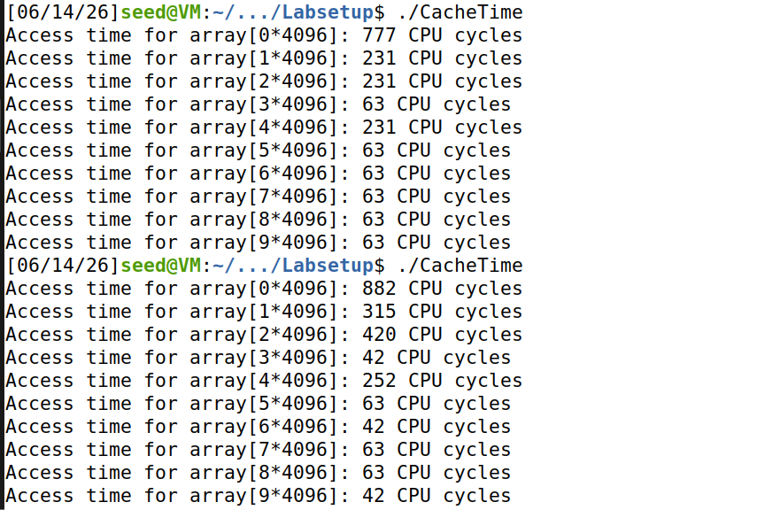
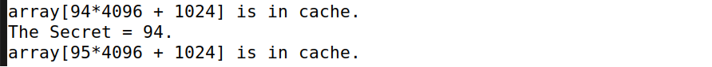
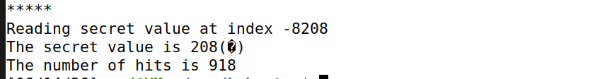

Overview
Spectre (2018) affects Intel, AMD, and ARM processors. Unlike Meltdown's direct kernel read, Spectre weaponizes branch prediction: the CPU speculatively executes code paths that violate bounds checks, then leaks the secret through cache timing before the misprediction is discarded.
Attack flow: train the branch predictor with valid inputs → submit a malicious out-of-bounds index → CPU transiently accesses secret data and touches a probe array → attacker reads cache timing to recover the byte.
Task 1 — Cache vs Memory Timing
Ran CacheTime to baseline L1 cache behavior. Cached indices returned 42–63 cycles; uncached reads ranged from 231 to 882+ cycles. Set threshold at ~80 cycles for hit detection.

Task 2 — Cache as Side Channel
Flush+Reload successfully recovered secret value 94:
array[94*4096 + 1024] is in cache.
The Secret = 94.Minor noise (95, 97) appeared but the target value was clearly identifiable — demonstrating that attackers never need direct memory reads.

Task 3 — Out-of-Bounds Access Test
Fed the victim function an index outside its allowed range. Despite bounds checking in software, speculative execution still transiently accessed the secret and left cache traces — the core Spectre insight.
Task 4 — Full Spectre Attack
Trained the branch predictor with legitimate calls, then passed a malicious index (-8208) to force speculative out-of-bounds access. Initial single-run output was noisy:
Reading secret value at index -8208
The secret value is 208
The number of hits is 918
Target secret was ASCII 83 ('S'). Ran the attack in a loop (100 iterations) — recovered on iteration 98. Confirmed again on a manual third run with clean output showing secret value is 83(S).
High hit counts (918) made results significantly more reliable than single-shot attempts. VM timing noise remained the main challenge.

Key Takeaways
- Bounds checks in software do not stop speculative execution — the CPU may run unsafe code for a brief window.
- Branch predictor training is the setup phase; the malicious index is the trigger.
- Statistical repetition (loop + hit counting) improves reliability when single runs are noisy.
- Spectre is harder to patch than Meltdown because it targets performance features (branch prediction) used by virtually every modern CPU.
- Security vulnerabilities can originate in hardware design, not just application code.
Tools & Techniques
- SEED Ubuntu VM · GCC · C victim/spectre attack code
- Flush+Reload probe array · cache hit threshold tuning
- Branch predictor poisoning via repeated valid calls
- Iterative attack script (100-run loop for secret recovery)